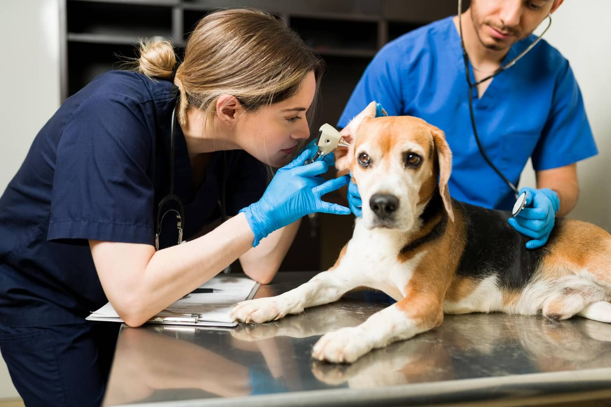
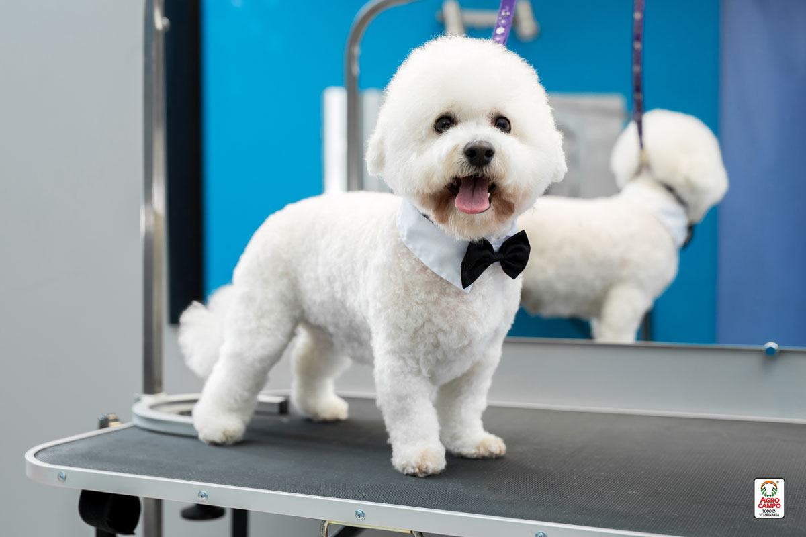
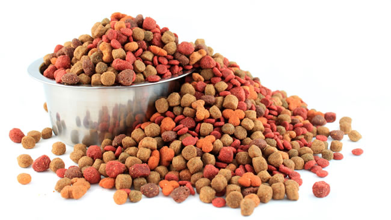

Servicios Medicos y preventivos
- Consulta Medica
- Vacunacion y desparasitacion
- Chequeos preventivos
- Curaciones y atencion de heridas
- Esterilacion y procedimientos menores
- Orientacion sobre cuidados y bienestar animal
Estetica y bienestar

- baño y secado
- Corte de pelo y arreglo higenico
- corte de uñas
- limpieza de oidos
- tratamientos para piel y pelaje
Alimentos y medicamentos

- Alimentos balanceados para mascotas
- Alimentos para necesidades especiales
- Snacks y premios
- Vitaminas y suplementos
- Medicamentos veterinarios basicos
- Productos antiparasitarios internos y externos
- Productos para higiene y cuidado de mascotas